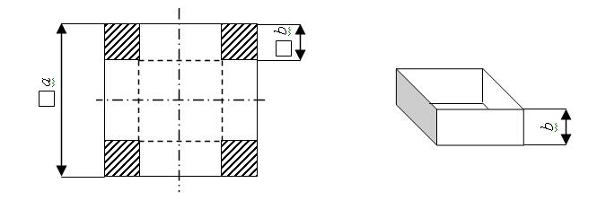

Олимпиада Python 011
Введите ваше Имя и Фамилию:
Введите вашу почту:
Задача 1
Колхозные работы
Колхозники в количестве n человек приехали с полей и решили справедливо разделить урожай. Из m килограмм картошки каждый получил свою часть согласно своему возрасту. Самый молодой колхозник взял a килограмм картошки, а каждый следующий по возрасту колхозник брал на один килограмм больше, чем его предыдущий коллега. Последним был глава колхоза, которому досталось вдвое больше от запланированного. Очевидно, что после него картошки больше не осталось. Сколько было колхозников, если известны a и m. Колхозников должно быть не менее 2-х.
Входные данные:
Первая строка входного файла INPUT.TXT содержит числа a и m – сколько взял картошки самый молодой колхозник и количество картошки.
Выходные данные:
В выходной файл OUTPUT.TXT выведите одно целое число - количество колхозников.
Входные данные
Выходные данные
5 25
3
Выберите файл
Задача 2
Автоматы с игрушками
Вася очень любит профессионально играть в автоматы с игрушками и всегда выигрывает. Однажды он пришёл в магазин и увидел, что там стоит N автоматов с игрушками. У каждого автомата своя стоимость игры (n1, n2, ...). Чем дороже игра, тем более крутую игрушку можно вытащить. Вася взял с собой определённое количество денег C. Вася не может играть в один и тот же автомат больше одного раза. Васю не волнует количество игрушек, его волнует крутость игрушек. Необходимо вывести количество денег, которое осталось у Васи после игр (а Вася играет, пока у него хватает денег продолжать). Учитывайте, что мальчик вначале тянет более крутые игрушки.
Входные данные:
Первая строка входного файла INPUT.TXT содержит количество автоматов с игрушками в магазине N и количество монет Васи C. Вторая строка содержит стоимости игры в автоматы.
Выходные данные:
В выходной файл OUTPUT.TXT выведите одно целое число - количество денег, которые остались у Васи после игр.
Входные данные
Выходные данные
8 100
10 12 8 15 6 17 8 24
0
12 250
50 67 87 14 52 23 42 12 38 16 19 24
2
Выберите файл
Задача 3
Антонио-пиццеед
Антонио очень любит пиццу. В любом виде и с любыми начинками. Однажды, пребывая в голодном состоянии, Антонио зашел в пиццерию и увидел, что в продаже есть его любимые пиццы: с ананасами, с кукурузой и с шоколадом. Антонио желает купить как можно больше пицц, но есть проблема. Количество пицц ограничено так же, как и количество денег у Антонио. Помогите Антонио определить максимально возможное количество пицц, которое он может купить.
Входные данные:
Первая строка входного файла INPUT.TXT содержит числа P1, P2 и P3 – стоимость пицц с ананасами, с кукурузой и с шоколадом соответственно. Во второй строке определены значения N1, N2 и N3 – количество соответствующих пицц в продаже. В третьей строке записано число R – количество денег у Антонио. Все числа во входных данных целые неотрицательные, не превосходящие 1018.
Выходные данные:
В выходной файл OUTPUT.TXT выведите одно целое число - максимальное количество пицц, которые сможет купить Антонио.
Входные данные
Выходные данные
5 3 8
2 6 4
23
7
15 18 20
1 4 100
1000000
105
Выберите файл
Задача 4
Биатлон (или нет?)
Совсем недавно прошёл супер турнир по биатлону, в котором участвовали 5 спортсменов из разных стран. В ходе соревнований каждый участник стрелял по шести мишеням. Аня работает судьёй на этих соревнованиях. Ей принесли файл, в котором записаны результаты участников. Девушке необходимо вывести номер победителя.
Входные данные:
Каждая строка входного файла INPUT.TXT содержит номер участника и 6 чисел: 0 или 1. Число 0 - соответствует значению, что игрок не попал, а число 1 - что попал.
Выходные данные:
В выходной файл OUTPUT.TXT выведите одно целое число - номер участника победителя.
Входные данные
Выходные данные
132 1 1 1 0 1 1
2 0 0 0 1 0 1
56 1 1 1 1 0 0
132
Выберите файл
Задача 5
Милые коробки для милых котиков
Котам нужны коробки (не спрашивайте зачем), которые необходимо сделать из картонных листов размером a x a. Коробка должна быть открытой сверху и иметь квадратное основание. Коробка формируется в два этапа. Первый шаг: квадратные кусочки размера b x b вырезаются из углов картонного листа. Второй шаг: прямоугольные части сгибаются на 90 градусов внутрь коробки. По длине стороны картонного листа a необходимо найти такую высоту b коробки, для которой ее объем будет максимальным.

Входные данные:
Первая строка содержит количество коробок, которые нужно сделать. Каждая из следующих n строк содержит одно действительное число – длину стороны картонного листа a.
Выходные данные:
В выходной файл OUTPUT.TXT вывести в отдельной строке оптимальную высоту b, округленную до 10 десятичных знаков.
Входные данные
Выходные данные
1
34
5.666667
Выберите файл
Задача 6
Дорогая коммуналка
Вика и Андрей переехали в новый дом и у них очень интересный тариф на горячую воду. Они платят 200 рублей за 100 литров. Каждый литр сверх этого значения стоит 4 рубля. Зарплата Вики и Андрей - Z рублей. В день зарплаты им также приходит письмо с информацией, сколько литров они потратили за месяц - A. Сколько денег останется у Вики и Андрея после оплаты за воду?
Входные данные:
В единственной строке входного файла INPUT.TXT содержатся Z - зарпалата Вики и Андрей и A - сколько литров воды они потратили за месяц.
Выходные данные:
В выходной файл OUTPUT.TXT выведите одно целое число - сколько денег останется после оплаты за воду?.
Входные данные
Выходные данные
50000 350
48800
37654 879
33938
Выберите файл
Задача 7
Dream Team
Команда студентов принимает участие в конкурсе по математике. Известно, что в конкурсе N задач. Время на решение - 5 часов. Капитан команды делает расчёт, что его команда сможет решить X задач за первый час, а на каждую из оставшихся задач команда будет тратить ровно T минут. Напишите программу, которая подсчитает количество задач, которые команда сможет решить, при условии, что расчеты капитана команды верны.
Входные данные:
В единственной строке входного файла INPUT.TXT содержатся три числа: N - количество задач, X - количество задач, которые команда решит за первый час, T - количество минут на решение каждой из оставшихся задач.
Выходные данные:
В выходной файл OUTPUT.TXT выведите одно целое число - количество задач, которые успеет решить команда.
Входные данные
Выходные данные
12 7 45
12
10 3 60
7
Выберите файл
Задача 8
Коля Портер и загадочная дверь
Коля Портер учится в Хогвартсе. Он знает страшный секрет: если 4 выключателя в комнате зельеварения включить в определенном порядке, то откроется таинственная дверь. Известно, что дверь открывается только в том случае, когда включены хотя бы два выключателя, которые расположены не рядом друг с другом. По заданному состоянию выключателей требуется определить: открыта ли магическая дверь?
Входные данные:
В единственной строке входного файла INPUT.TXT содержится строка, состоящая из четырех символов «!» или «0», описывающих состояния выключателей от первого до четвертого соответственно. Символ «!» обозначает, что выключатель находится в состоянии «включен», а «0» обозначает состояние «выключен».
Выходные данные:
В выходной файл OUTPUT.TXT выведите одно целое число - количество задач, которые успеет решить команда.
Входные данные
Выходные данные
+--+
On
--++
Off
Выберите файл
Задача 9
Счастливые даты
Настя увлекается нумерологией. Она считает, что дата, записанная в формате ДДММГГГГ - счастливая, если в ней день делится на число 3, месяц - чётное число, а год – нечётное число. Например, дата «девятое октрября 2013 года» (09102013) является счастливой. А вот дата «11 июля 1997 года» (13061997) не является красивой, так как не выполнились все условия (день не делится на 3й). Насте надоело считать всё самой и она решила попросить вас написать программу, которая ей в этом поможет.
Входные данные:
В первой строке входного файла INPUT.TXT содержится корректная дата в виде последовательности десятичных цифр формата ДДММГГГГ. Такое представление даты можно рассматривать как восьмизначное целое число с одним возможным лидирующим нулём. Дата может быть любой в промежутке от 1 января 1 года (01010001) до 31 декабря 9999 года (31129999).
Выходные данные:
В выходной файл OUTPUT.TXT выведите «Lucky», если дата является счастливой, и «Bad» – в противном случае.
Входные данные
Выходные данные
12022001
Lucky
08061997
Bad
Выберите файл
Задача 10
Камень-ножницы-бумага
Брат Дэн и сестра Алла обожают играть в Камень-ножницы-бумага. На счет три они одновременно выбирают один из трех предметов. Игра длится определенное, наперед установленное количество раундов N. Игрок, который выиграет большую часть раундов, объявляется победителем. По заданному количеству раундов и их исходам следует определить победителя. Следующие правила описывают правила победы:
Камень всегда побеждает Ножницы (Камень раздавливает Ножницы)
Ножницы всегда побеждают Бумагу (Ножницы режут Бумагу)
Бумага всегда бьет Камень (Бумага покрывает Камень)
Входные данные:
В первой строке входного файла INPUT.TXT содержится количество игр N, сыгранных между Денисом и Аллой, в каждой последующей строчке результаты игры: одну из заглавных букв R (Камень), P (Бумага) или S (Ножницы), пробел и снова заглавную букву R, P или S. Первая буква обозначает выбор Дениса, вторая буква - выбор Аллы.
Выходные данные:
В выходной файл OUTPUT.TXT выведите «Denis Win», если выиграл первый игрок, и «Alla wins» – в противном случае. В случае ничьи вывести - «Draw»!
Входные данные
Выходные данные
2
R P
S R
Alla win
1
P R
Denis win
Выберите файл